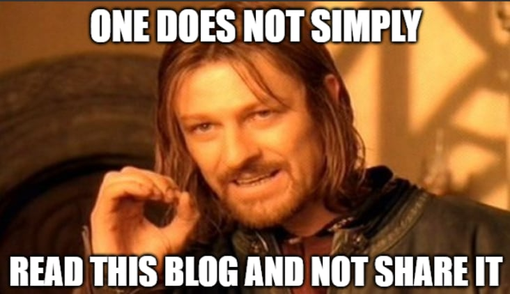

By reading this section, you will be able to answer the following questions:
- Why did I start this blog series?
- Who I am, and what experience I can bring to the discussion?
- How to read this blog?
- My friends’ contacts, since I encourage you to not just read this blog but also reach out to other people
A PhD (which is short for Doctor of Philosophy) is a momentous title, but if you are here reading this blog, I trust that your goal is just as big as this term. If it is the case, then I hope this series of blogs will help you to better understand how the PhD application process works, especially for Math/ Applied Math. All tips in this series are personal advice. I do not represent or write on behalf of any institution, and thus all mistakes are mine. Email me at hmtrieu@terpmail.umd.edu if you have any suggestions for the content of this series.
A note on AI: I did not use AI for this whole blog series. Not because I don’t use AI in general, but I want to genuinely share my experience. If you catch any spelling/grammar mistakes, you know it’s my silly English.
Why did I start this blog series?
I expect the following admissions cycles to be even more challenging in the upcoming years, and that’s why sharing what I have gone through would hopefully (1) help students to have a more detailed picture of the application process and (2) encourage other people to share their own PhD applications experience. I have had support from so many of my professors, mentors, and friends, and I want to pay it forward. No matter how your results turn out, I would love to meet (and hopefully work with) you in the future!
Who I am, and what experience I want to share?
My name is Hoang Trieu, and I am a new graduate from Augustana College, IL. I applied for a few doctorate programs in the US and masters programs in Europe during the Fall 2026 admissions cycle, and the results were a bit surprising to me (because it was so tough).
In total, I applied to 16 programs across the globe. The results are:
- 4 offers:
- Applied Mathematics, Statistics, and Scientific Computing PhD at University of Maryland, College Park (with funding) - committed
- Mathematical Science PhD at University of Delaware (with funding)
- Mathematical Engineering Masters at Politechnico di Milano (no funding, because I forgot to apply for one)
- Mathematics Masters at KU Leuven (No funding)
- And, obviously, 12 rejected applications
I will share my stats in detail soon, but overall, I applied as a student coming from a small liberal arts college with limited coursework. My GPA at the time of the application was 3.8, and I took a semester abroad to broaden my coursework. I applied with 2-3 research experiences and no publication (though I was preparing a manuscript at the time of application submission). For the University of Maryland, I also indicated that I was awarded the Outstanding Undergraduate Research with Distinction by the Mathematical Association of America (Illinois section) and Augustana College’s Honor Award in Mathematical Science.
I want to share my stats not to impress anyone (although I would be honored if you tell me that you are impressed - who doesn’t?), but so that anyone with similar interests and backgrounds can pick up some helpful information. That’s why you are encouraged to reach out to other applicants of the last cycle(s) and learn more about their applications too. There is no exact formula to success, and no applicants are similar.
How to read this blog?
I will split this blog into digestible sections (I got you, the short attention span generation) such that you don’t have to follow everything in order. The following sections will be introduced:
- Brief Introduction
- PhD Application in the US
- Timeline
- School Research
- Documentations
- Letters of Recommendation
- Personal Statement/ Statement of Purpose
- Academic Resume
- (International Students) - Documents
- (Optional) Coursework Sheet
- You submitted your application - What comes next?
I am a huge believer in inquiry-based approaches. At the beginning of each section, I would list a series of questions, and I encourage you to briefly answer them on your own. Reading something with an expectation would help you identify a similar belief with my experience, or highlight some contacts that might be a misunderstanding from your side/ my side.

I would love to hear from you after reading my blogs. Give me questions, feedback, or suggestions to hmtrieu@terpmail.umd.edu! I also appreciate it if you can share this blog, because I believe this will be resourceful for some people. Your peers might be your competitors, but they also will be your co-workers in the future. Don’t be discouraged from helping your community just because they are also applying for PhD. That’s not how the Math community should work.
Another reminder: I’m an Applied Math with experience in Numerical Methods and Analysis. Therefore, my experience might not help you that much. I am reaching out to my friends and asking for their permission to include their contact in this document. I will update it as I reach out to more people. Check back every week - some of my friends might help you with your application, and maybe, be your coworker!